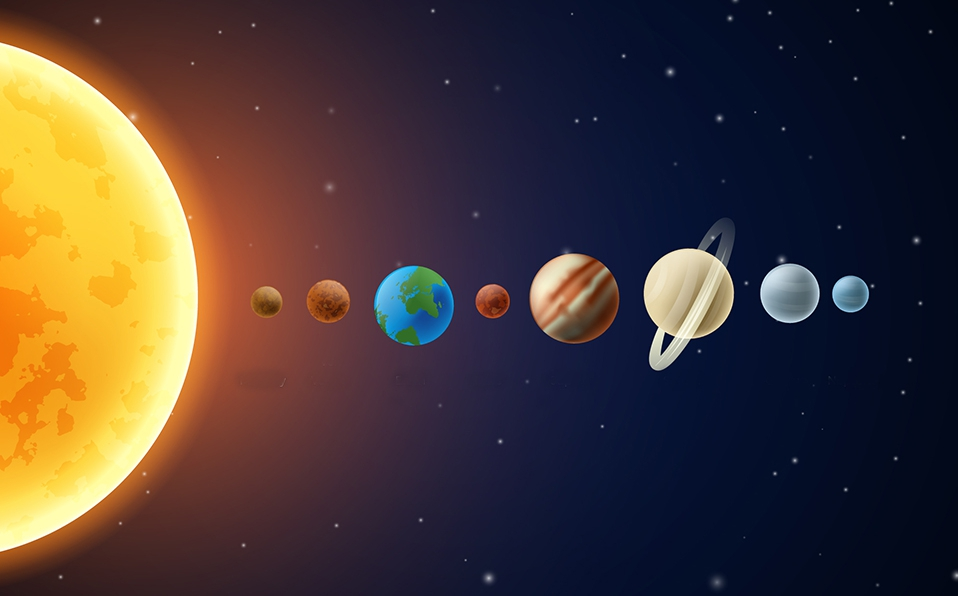

Nuestro sistemas solar...
Mercurio
Venus
Tierra
Marte
Jupiter
Saturno
Urano
Neptuno
Sol
JÚPITER
El primer planeta gaseoso se encuentra después del cinturón de asteroides y es Júpiter. Es el planeta más grande del Sistema Solar y el quinto en distancia al Sol. Se formó a partir del material que quedó después de la formación del “astro rey”.
Es una gigantesca bola de gas achatada sin superficie sólida pero probablemente con un núcleo interno sólido. Algunos científicos se refieren a este planeta como una estrella fallida, que no creció lo suficiente para ser catalogada como tal. Pese a su tamaño, es menos denso que el Sol y casi 4 veces menos denso que los planetas rocosos (Mercurio, Venus, Tierra y Marte).